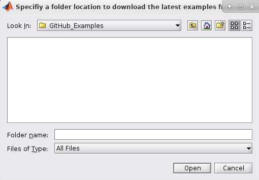
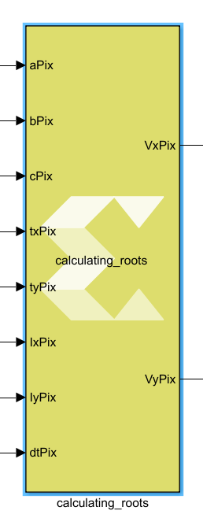
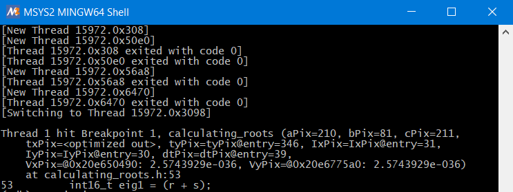

<html>
<head>
<title></title>
<meta name="viewport" content="width=device-width, initial-scale=1">
</head>
<body>
<h1 id="lab-3-debugging-imported-cc-code-using-gdb-debugger">Lab 3: Debugging Imported C/C++-Code Using GDB Debugger</h1>
<html>    
<script>
function myFunction() {

var path = document.location.pathname;
var directory = path.substring(path.indexOf('/'), path.lastIndexOf('/'));

commandURI="matlab:chdir('" + directory + "');"

document.location=commandURI
}
</script>
<noscript>Sorry, your browser does not support JavaScript!</noscript>
       
<button type="button" style="background-color:#d0d028; font-size: 20px;" onclick="myFunction()">Open Lab Directory</button>  
              
</html>
<p>Model Composer provides the ability to debug <code>C/C++</code> code that has been <br />
imported as a block using the <code>xmcImportFunction</code> command, <br />
while simulating the entire design in Simulink® .</p>
<p>The debug flow in Vitis Model Composer is as follows:</p>
<ol>
<li>Specify the debug tool using the xmcImportFunctionSettings command.</li>
<li>Launch the debugging tool.</li>
<li>Add a breakpoint in the imported function.</li>
<li>Attach to the MATLAB® process.</li>
<li>Start Simulink simulation.</li>
<li>Debug the imported function during simulation.</li>
</ol>
<p>This lab has two steps:</p>
<ul>
<li>Step 1 introduces you to the Optical Flow demo design example in GitHub. It shows you how to identify the custom library block, created using the <code>xmcImportFunction</code> feature.</li>
<li>Step 2 shows you how to debug <code>C/C++</code> code using the GDB tool.</li>
</ul>
<p>For more details and information about how to create custom blocks, refer to the Vitis Model Composer User Guide (UG1483).</p>
<h2 id="step-1-set-up-the-example-to-debug-the-import-function">Step 1: Set Up the Example to Debug the Import Function</h2>
<ol>
<li>Type the following at the MATLAB command prompt:</li>
</ol>
<pre><code>xmcOpenExamples();
</code></pre>
<ol start="2">
<li><p>Press <strong>Enter</strong>. A window opens to specify the folder location to download the examples from GitHub.<br />
<br><br></p></li>
<li><p>Click <strong>Open</strong> after choosing the location. Once the download completes, the HTML page opens.</p></li>
<li><p>Click <strong>HLS Examples</strong> under heading Table of Contents. This redirects you to the list of HLS Examples as shown. </p></li>
<li><p>Click the <strong>Optical Flow</strong>. A description of the example displays.<br />
<br><br></p></li>
<li><p>Click Click <strong>Open Design</strong> at the top left corner. This opens the example design.<br />
<br><br></p></li>
<li><p>Right-click on the <strong>Lucas-Kanade</strong> subsystem and select <strong>Mask > Look Under Mask</strong> to observe the calculating-roots block.<br />
<br><br></p></li>
</ol>
<blockquote>
<p> <strong>Note:</strong> This block has been generated using the <code>xmcImportFunction</code> feature. Its function declaration can be seen by double-clicking on the block.</p>
</blockquote>
<ul><br><br></ul>
<ol start="8">
<li>To view the function definition of <code>calculating_roots</code>, navigate to the current folder in the MATLAB window and double-click on <samp> calculating_roots.h </samp>.<br />
<br><br></li>
</ol>
<p>The setup is now ready for you to debug your <code>C/C++</code> code. In the next step, you will see how to debug the code using GDB tool debugger.</p>
<h2 id="step-2-debugging-cc-code-using-gdb-debugger">Step 2: Debugging C/C++ Code Using GDB Debugger</h2>
<ol>
<li>Specify the debug tool using the <code>xmcImportFunctionSettings</code> command. At the MATLAB® command prompt, type the following command:</li>
</ol>
<pre><code>&gt;&gt; xmcImportFunctionSettings(‘build’, ‘debug’);
</code></pre>
<blockquote>
<p>⭐ <strong>Tip</strong>: You can restore the release build environment, using the <code>release</code> value of the <code>build</code> option: <code>xmcImportFunctionSettings('build','release')</code>.</p>
</blockquote>
<ol start="2">
<li><p>Press Enter to see the applied settings in command window, as shown in the following figure.<br />
<br><br><br />
<br><br> Note the gdb link that you will use to invoke the debugger tool, and the MATLAB process ID that you will use to attach the process to the debugger.</p></li>
<li><p>Click on the <strong>gdb</strong> link, to invoke the terminal and launch gdb.<br />
<br><br></p></li>
<li><p>At the terminal, use the following command to specify the breakpoint in the <samp> calculating_roots.h </samp> file where you want the code to stop executing. Press <strong>Enter</strong> to run the command.</p></li>
</ol>
<pre><code>(gdb) break calculating_roots.h:53 
</code></pre>
<blockquote>
<p> <strong>Note</strong>: The “53” in the above command, tells the GDB debugger to stop the simulation at line 53 of your program.</p>
</blockquote>
<ul><br><br></ul>
<ol start="5">
<li><p>Once the command runs, you can see a pending breakpoint in the terminal. This is shown in the following figure.<br />
<br><br><br />
<br><br>If you see any questions from GDB, answer “yes” and press Enter.</p></li>
<li><p>To attach the MATLAB process to the GDB debugger, type the following:</p></li>
</ol>
<pre><code>(gdb) attach &lt;process_ID&gt; 
</code></pre>
<ul> Enter the <process ID you saw in step 2. For example “15972”. As soon as the MATLAB process is attached, the MATLAB application gets frozen and becomes unresponsive. 
<br><br> </ul>
<blockquote>
<p> <strong>Note</strong> : During the debug process, if prompted to press 'c' to continue, type 'c' and hit Enter.</p>
</blockquote>
<ol start="7">
<li><p>Type <code>cont</code> in the terminal.<br />
<br><br></p></li>
<li><p>Now go to the Simulink® model and run the simulation by clicking the <strong>Run</strong> button.<br />
<br><br></p></li>
<li><p>The model takes some time to initialize. As the simulation starts, you see the simulation come to the breakpoint at line 53 in the terminal window.<br />
<br><br><br />
<br><br>Now, type the command list to view the lines of code around line 53.</p></li>
</ol>
<pre><code>(gdb) list
</code></pre>
<ol start="10">
<li>Now, type command step to continue the simulation one line to the next step.</li>
</ol>
<pre><code>(gdb) step
</code></pre>
<blockquote>
<p>❗❗ <strong>Important:</strong> The following are some useful GDB commands for use in debugging:</p>
<ul>
<li>(gdb) list</li>
<li>(gdb) next (step over)</li>
<li>(gdb) step (step in) * </li>
<li>(gdb) print \<variable></li>
<li>(gdb) watch \<variable></li>
</ul>
</blockquote>
<ol start="11">
<li>Type <code>print r</code> to view the values of variables at that simulation step. This gives the result as shown in the following figure.</li>
</ol>
<pre><code>(gdb) print r
$1 = 421
</code></pre>
<ol start="12">
<li>You can try using more gdb commands to debug and once you are done, type <code>quit</code> to exit GDB, and observe that the Simulink model continues to run.</li>
</ol>
<h3 id="conclusion">Conclusion</h3>
<p>In this lab, you learned:</p>
<ul>
<li>How to use a third party debugger (GDB debugger) and control the debug mode using xmcImportFunctionSettings.</li>
<li>How to debug source code associated with your custom blocks using the GDB debugger, while leveraging the stimulus vectors from Simulink.</li>
</ul>

</div>
<style type='text/css'>body {
font: 400 16px/1.5 "Helvetica Neue", Helvetica, Arial, sans-serif;
color: #111;
background-color: #fdfdfd;
-webkit-text-size-adjust: 100%;
-webkit-font-feature-settings: "kern" 1;
-moz-font-feature-settings: "kern" 1;
-o-font-feature-settings: "kern" 1;
font-feature-settings: "kern" 1;
font-kerning: normal;
padding: 30px;
}

@media only screen and (max-width: 600px) {
body {
padding: 5px;
}

body > #content {
padding: 0px 20px 20px 20px !important;
}
}

body > #content {
margin: 0px;
max-width: 900px;
border: 1px solid #e1e4e8;
padding: 10px 40px;
padding-bottom: 20px;
border-radius: 2px;
margin-left: auto;
margin-right: auto;
}

hr {
color: #bbb;
background-color: #bbb;
height: 1px;
flex: 0 1 auto;
margin: 1em 0;
padding: 0;
border: none;
}

/**
* Links
*/
a {
color: #0366d6;
text-decoration: none; }
a:visited {
color: #0366d6; }
a:hover {
color: #0366d6;
text-decoration: underline; }

pre {
background-color: #f6f8fa;
border-radius: 3px;
font-size: 85%;
line-height: 1.45;
overflow: auto;
padding: 16px;
}

/**
* Code blocks
*/

code {
background-color: rgba(27,31,35,.05);
border-radius: 3px;
font-size: 85%;
margin: 0;
word-wrap: break-word;
padding: .2em .4em;
font-family: SFMono-Regular,Consolas,Liberation Mono,Menlo,Courier,monospace;
}

pre > code {
background-color: transparent;
border: 0;
display: inline;
line-height: inherit;
margin: 0;
overflow: visible;
padding: 0;
word-wrap: normal;
font-size: 100%;
}


/**
* Blockquotes
*/
blockquote {
margin-left: 30px;
margin-top: 0px;
margin-bottom: 16px;
border-left-width: 3px;
padding: 0 1em;
color: #828282;
border-left: 4px solid #e8e8e8;
padding-left: 15px;
font-size: 18px;
letter-spacing: -1px;
font-style: italic;
}
blockquote * {
font-style: normal !important;
letter-spacing: 0;
color: #6a737d !important;
}

/**
* Tables
*/
table {
border-spacing: 2px;
display: block;
font-size: 14px;
overflow: auto;
width: 100%;
margin-bottom: 16px;
border-spacing: 0;
border-collapse: collapse;
}

td {
padding: 6px 13px;
border: 1px solid #dfe2e5;
}

th {
font-weight: 600;
padding: 6px 13px;
border: 1px solid #dfe2e5;
}

tr {
background-color: #fff;
border-top: 1px solid #c6cbd1;
}

table tr:nth-child(2n) {
background-color: #f6f8fa;
}

/**
* Others
*/

img {
max-width: 100%;
}

p {
line-height: 24px;
font-weight: 400;
font-size: 16px;
color: #24292e; }

ul {
margin-top: 0; }

li {
color: #24292e;
font-size: 16px;
font-weight: 400;
line-height: 1.5; }

li + li {
margin-top: 0.25em; }

* {
font-family: -apple-system, BlinkMacSystemFont, "Segoe UI", Helvetica, Arial, sans-serif, "Apple Color Emoji", "Segoe UI Emoji", "Segoe UI Symbol";
color: #24292e; }

a:visited {
color: #0366d6; }

h1, h2, h3 {
border-bottom: 1px solid #eaecef;
color: #111;
/* Darker */ }</style>
</body>
</html>
